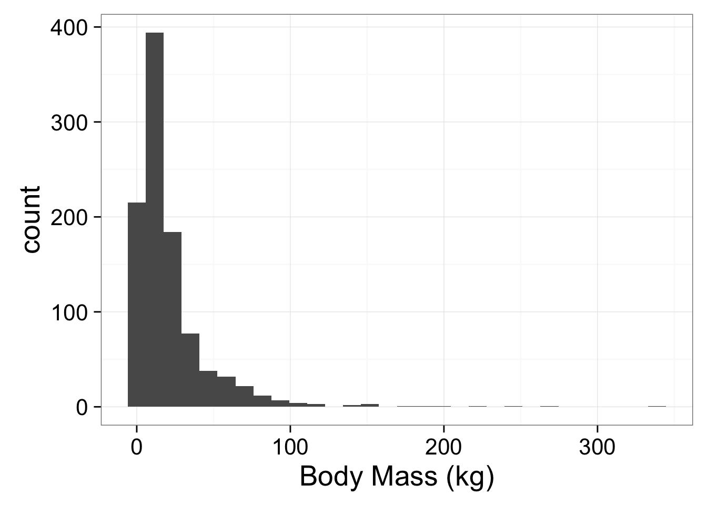
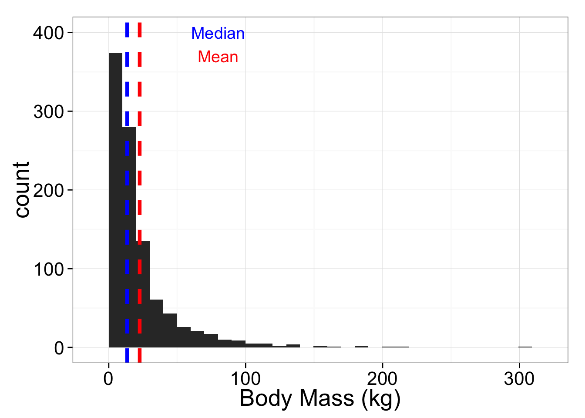

Summary statistics serve to summarize of the central tendency (or location) and spread of a distribution.
Consider the following distribution of (simulated) mammalian body size data
library(ggplot2)
mammalmass <- rlnorm(1000, meanlog = 2.6)
bmplot <- qplot(mammalmass, xlab="Body Mass (kg)") + theme_bw(20)
bmplot
The most basic question to ask is where the central tendency of this distribution is. There are a variety of measures of central tendency.
The arithmetic mean (often called the average and abbreviated \(\bar{Y}\)) is the most familiar.
\[\bar{Y} = \frac{ \sum\limits_{i=1}^{n} Y_i}{n} \]
where \(n\) is the number of observations in the sample.
The mean is relatively easy to understand, but has limitations. It is very sensitive to outliers, so the mean of the sample need not be very close to many of the actual observations.
Other measures of central tendency include the median, mode, and geometric mean.
The median is the middle value in an ordered distribution (or the average of the two middle values if there are an even number of values in the distribution). It is much less sensitive to outliers than the mean. (e.g. mean income is sensitive to the super rich, and thus reflects an income that not very many people earn. Median income reflects an income that many more people actually earn.)
The plot below shows the mean versus the median for the mammalmass variable.
## stat_bin: binwidth defaulted to range/30. Use 'binwidth = x' to adjust this.
The mode is the point with the highest probability density. This refers to the “peak” of the probability density function. There is no really easy way to calculate the mode of a continuous variable in R, but it can be easily detected visually. A distribution may have more than one mode.
The geometric mean is defined as the \(nth\) root of the product of \(n\) numbers. The geometric mean is especially useful for summarizing values that are of different scale. A common use is to calculate an overall size variable from a series of measurements that have very different scales (e.g. the length of a toe bone, and the length of a femur).
Measurements of spread tell us how values are distributed around a central tendency. The most basic measure of spread is the variance:
The variance is the mean squared deviation divided by the number of observations minus 1.
\[s^2 = \frac{1}{(n-1)} \sum (Y_i - \bar{Y}) \]
It describes how spread out the values tend to be around the mean value.
The sample standard deviation refers to the square root of the variance. It is probably the most commonly reported measure of spread. Standard deviations are related to 95% confidence intervals in that 95% of the observations in a normal distribution will fall within \(\pm\) 1.96 standard deviations. The sample standard deviation divided by the square root of the sample size is known as the standard error of the mean, or standard error. The standard error and standard deviation are both widely reported in the literature, and can be converted back and forth as long as the sample size is reported.
The variance is also called the second moment. The third moment indicates the skewness and the fourth indicates the kurtosis (pointiness or flatness).
The foundation of frequentist statistics (which is most of what we will do) is that the population level parameters \(\mu\), \(\sigma\), and \(\sigma^2\) have true, fixed values. We can never know these true fixed values, so we are forced to approximate them with \(\bar{Y}\), \(s\) and \(s^2\).
The Law of Large Numbers proves that if the population were sampled an infinite number of times, the average of our \(\bar{Y}\) approximations would be identical to \(\mu\). This is where the name frequentist comes from…if we repeat our experiment an infinite number of times, the most frequent sample estimates of our parameters will converge on the true population value.